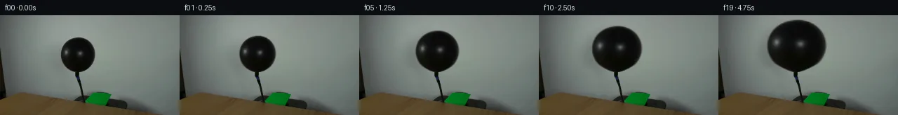

![首帧]()

Round 00
2026-11-04T23:12:30.360638+00:00像素候选变化代码 +313/−0inspection 更新
pixels c4bfb4bb5fda7437 · code f6aebdd7751514b0
查看本轮 generate.py 真实 diff
--- previous/generate.py
+++ current/generate.py
@@ -0,0 +1,313 @@
+"""PixelWorld continuation using only local source-image pixel operations.
+
+Run: python generate.py
+No model, external renderer, network call, or image-viewing tool is used.
+"""
+from pathlib import Path
+import base64
+import json
+import re
+
+import numpy as np
+from PIL import Image, ImageDraw
+from scipy.ndimage import (
+ binary_dilation,
+ distance_transform_edt,
+ gaussian_filter,
+ map_coordinates,
+ shift,
+)
+
+from artifact_io import save
+
+
+ROOT = Path(__file__).resolve().parent
+TMP = ROOT / ".tmp"
+TMP.mkdir(exist_ok=True)
+SOURCE = np.asarray(Image.open(ROOT / "first_frame.png").convert("RGB"))
+H, W = SOURCE.shape[:2]
+assert (H, W) == (144, 256)
+RGB = SOURCE.astype(np.float64)
+YY, XX = np.mgrid[:H, :W].astype(np.float64)
+ANCHOR_X, ANCHOR_Y = 110.0, 82.0
+
+
+def smoothstep(x):
+ x = np.clip(x, 0.0, 1.0)
+ return x * x * (3.0 - 2.0 * x)
+
+
+def extract_surface():
+ """Infer a local contrast matte and undo boundary/background mixing.
+
+ All row spans, colors, and edge data come directly from the first frame.
+ The two interior reflection patches remain part of the balloon surface.
+ """
+ luma = RGB.mean(axis=2)
+ solid = np.zeros((H, W), bool)
+ bounds = {}
+ for y in range(32, 91):
+ dark = np.flatnonzero(luma[y, 80:141] < 100.0) + 80
+ if dark.size:
+ left, right = int(dark.min()), int(dark.max())
+ solid[y, left : right + 1] = True
+ bounds[y] = (left, right)
+
+ # Fill spans instead of thresholding the interior, preserving highlights.
+ # Extend the first-row support to capture the tiny antialiased tip at y=31.
+ plate = RGB.copy()
+ for y in range(29, 93):
+ row = min(max(y, 32), 90)
+ left, right = bounds[row]
+ left_x, right_x = left - 4, right + 4
+ # Same-row neighborhoods retain the wall gradient and existing shadow.
+ left_color = np.median(RGB[y, left_x - 1 : left_x + 2], axis=0)
+ right_color = np.median(RGB[y, right_x - 1 : right_x + 2], axis=0)
+ blend = np.clip((XX[y] - left_x) / (right_x - left_x), 0.0, 1.0)
+ plate[y] = left_color + blend[:, None] * (right_color - left_color)
+
+ inward_distance = distance_transform_edt(solid)
+ inner = inward_distance >= 2.5
+ # Nearest opaque surface provides an edge-color estimate. Texture inside
+ # the body is untouched; these colors are used only for unmixing the rim.
+ _, nearest = distance_transform_edt(~inner, return_indices=True)
+ edge_color = RGB[nearest[0], nearest[1]]
+ support = binary_dilation(solid, iterations=2)
+ support &= (YY >= 30) & (YY <= 91) & (XX >= 80) & (XX <= 141)
+ boundary = support & (inward_distance < 2.5)
+ delta = plate - edge_color
+ alpha_estimate = np.sum((plate - RGB) * delta, axis=2)
+ alpha_estimate /= np.maximum(np.sum(delta * delta, axis=2), 1.0)
+ alpha = np.zeros((H, W), np.float64)
+ alpha[solid] = 1.0
+ alpha[boundary] = np.clip(alpha_estimate[boundary], 0.0, 1.0)
+ alpha[alpha < 0.025] = 0.0
+ foreground = RGB.copy()
+ present = alpha > 0.0
+ foreground[present] = (
… diff truncated; 226 more lines …